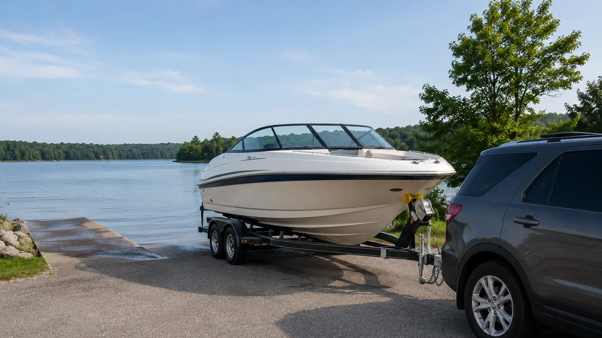

The first cold night rarely looks dramatic. The boat sits under a cover, the marina is quiet and the owner feels relief that the season finally slowed down. Inside a low hose loop, a few ounces of water wait to expand. A battery continues feeding a forgotten circuit. Damp life jackets begin their winter sealed beneath a seat. Spring trouble is usually prepared in autumn, one small omission at a time.
Build the checklist around the boat
A generic list is only a starting point. Gather the owner’s manuals for engine, drive, generator, water heater, sanitation, batteries, electronics and trailer. Manufacturers specify drain points, approved antifreeze, oil, fogging or preservation procedures and storage position. Following a social-media routine meant for another engine can create damage.
Make a system inventory: propulsion, fuel, raw-water cooling, freshwater, sanitation, air conditioning, batteries, electronics, safety gear, hull, canvas and trailer. Assign each task to owner, marina or specialist with a date. Winterization is complete only when every water-containing system has a documented disposition.
Haul early enough to solve problems
Waiting for the final warm weekend crowds ramps and yards while reducing the time available for repairs. Haul when the forecast and service schedule still allow a sea trial or engine run after maintenance. If the boat revealed overheating, vibration or charging trouble in August, winterization does not erase it. Diagnose before storage while symptoms and parts availability are still current.
Photograph the boat immediately after haul-out, including hull, running gear, propeller and trailer position. Note damage before pressure washing or yard handling changes the evidence. A written baseline prevents spring arguments and helps track wear.
Clean first, inspect while the evidence is fresh
Remove marine growth, dirt, salt and organic debris using methods appropriate to the hull and local environmental rules. Clean bilges without pumping contamination overboard. Wash compartments, allow ventilation and locate the source of persistent odors. Dirt hides cracks, corrosion and leaks.
Inspect gelcoat, paint, through-hulls, seacocks, transducers, trim tabs, anodes, shaft, propeller and drive. Fishing line behind a prop seal should be addressed now. A blister, loose fastener or bent blade is easier to schedule in October than during the April launch rush.

Engine and cooling system
Use the engine manufacturer’s storage procedure. Common work includes warming and changing oil, replacing filters, stabilizing or managing fuel, treating internal components where specified, protecting raw-water circuits and checking gearcase or transmission oil for water. Outboards, sterndrives and inboards have different drain paths and storage positions.
Do not rely on pink color at one outlet as proof every pocket is protected. Thermostats, coolers, pumps and low loops complicate flow. Freeze protection must use the correct marine/RV antifreeze where specified—not toxic automotive coolant in systems that discharge. If the procedure is uncertain, professional winterization is cheaper than a cracked block.
Fuel: full, empty or managed?
Fuel-storage advice depends on tank material, fuel type, climate and manufacturer guidance. Gasoline containing ethanol can absorb moisture and degrade; diesel presents microbial and water concerns. Stabilizer must be mixed at the correct ratio and circulated through the system before shutdown. It cannot restore stale fuel.
Inspect fill, vent and supply hoses, clamps, filters and the tank area. Record the fuel level and treatment used. A spring mechanic should not have to guess whether the tank contains stabilized gasoline, untreated fuel or a mixture from two seasons.
Freshwater, sanitation and every hidden pocket
Drain tanks, pumps, faucets, showers, washdowns, ice makers, livewells and water heaters according to their manuals. Bypass and drain the water heater correctly before introducing antifreeze where required. Open low-point drains and remove strainers. A transom shower hose is as capable of freeze damage as the main galley line.
Pump out sanitation legally, rinse as directed and winterize head, holding tank, macerator and related lines with approved products. Never assume a “mostly empty” loop is safe. Label bypass valves and take photos so spring recommissioning does not become a plumbing puzzle.

Batteries and electrical loads
Fully charge batteries, load-test or evaluate condition and follow manufacturer storage recommendations for the battery chemistry. Flooded, AGM and lithium systems have different requirements. Disconnect or switch off loads only after understanding bilge-pump and security needs. A boat stored in water cannot simply lose automatic dewatering.
Clean and protect terminals appropriately, inspect chargers and record voltage. Remove small alkaline batteries from remotes, flashlights and safety devices when recommended; leakage destroys equipment. Check smoke, carbon-monoxide and high-water alarms according to the vessel’s storage state.
Electronics, gear and soft goods
Back up chartplotter waypoints and routes before removing or updating anything. Take bracket-mounted electronics, handheld radios and valuable gear to dry secure storage when practical. Cap connectors with approved covers—never leave a transducer or network plug open to damp air.
Remove life jackets, cushions, towels, food, paper products and unnecessary line. Clean and dry them completely. Inspect life-jacket labels, foam, inflator status and hardware before storage. Mildew is not a spring cleaning problem; it is an autumn drying failure.
Hull openings, bilge and ventilation
Inspect seacocks and through-hulls, exercise them as appropriate and leave them in the storage position specified for the boat. Clean strainers. Verify drain plugs are removed or installed according to storage and yard requirements, then tag the helm and key so launch cannot occur in the wrong configuration.
Dry the bilge and trace recurring water. Ventilation should prevent condensation without allowing weather entry. Absorbent products have limits and require monitoring. Never place household heaters or unapproved electrical devices in an unattended boat.

Cover and support
A winter cover must support rain, snow and wind without chafing the boat or trapping water. Shrink-wrap needs ventilation and carefully placed supports; fitted fabric covers need inspection and proper pitch. Do not tie cover loads to stands in a way that can destabilize the hull.
Yard blocking and stands are professional work. Trailer-stored boats need tires, bearings, brakes, frame and support checked. Reduce opportunities for standing water, but do not alter hull support without manufacturer or professional guidance.
Trailer winterization
Wash the trailer thoroughly, especially after saltwater use. Inspect tires for age and damage, set pressure for storage, service bearings and brakes, lubricate the coupler and protect the electrical connector. Verify bunks, rollers, winch strap, safety chains and lights. Rust around welds and fasteners deserves investigation.
Store on a sound surface, chock securely and use theft deterrence. Do not let the tongue jack become the only long-term plan if the manufacturer recommends additional support. Record tire date codes and bearing service so spring preparation is based on facts.
Safety equipment has a calendar
Inventory flares and other visual-distress signals, extinguishers, EPIRB or PLB registrations, first-aid supplies, inflatable life-jacket components, batteries and lights. Check expiration or service dates. Review recalls and safety notices for the boat, engine and equipment.
Replace missing or questionable items during winter sales rather than launch morning. Keep an updated vessel-safety inventory with locations. Guests should not need the owner to interpret a closet of unlabeled equipment.

DIY versus professional work
Owners who understand their systems can handle cleaning, inventory, battery care and many manual-defined tasks. Professional help is appropriate when freeze paths are unclear, engines require specialized tools, fuel or electrical work exceeds competence, or the yard warranty depends on documented service.
Ask what a winterization package includes. “Engine” may not include generator, air conditioning, water heater, head or washdown. Request a written checklist and fluid quantities. Price is meaningful only when scope is explicit.
Common mistakes
- Waiting until after the first freeze warning.
- Winterizing the engine but forgetting washdown, livewell or water heater.
- Leaving damp jackets and cushions aboard.
- Assuming stabilizer fixes old fuel.
- Disconnecting batteries without considering bilge pumps or alarms.
- Covering tightly without ventilation.
- Failing to write a spring recommissioning list.
Most failures are not exotic. They are ordinary systems omitted from an ordinary list.
Write spring instructions while memory is fresh
Tag disconnected hoses, open drains, removed plugs and bypassed heaters. Record oil, filter and antifreeze products, battery state, fuel treatment and unresolved repairs. Photograph valve positions. Put the spring list at the helm and store a digital copy.
Include tasks discovered during haul-out: propeller repair, anode replacement, trailer bearing service, expired flares, torn canvas. A complete winter file turns commissioning into verification rather than archaeology.
The final walk-around
Start at the bow and walk clockwise: cover, lines or trailer, hull, drains, running gear, engine, batteries, systems, gear and paperwork. Look beneath the boat for leaks. Confirm keys and documents are secure, shore power is configured correctly and emergency contact information is current.
Then schedule one midwinter inspection after severe weather. Covers loosen, snow loads shift and pests find openings. A boat stored out of sight still owns part of the calendar.
Close the season without loose ends
Paid links: We may earn a commission when you purchase through the product links below, at no additional cost to you.
STA-BIL 360 Marine Fuel Stabilizer
A common gasoline-fuel treatment for boats that sit between uses or enter storage; dose and storage practice should follow the engine and fuel-system guidance.
Check current priceNOCO GENIUS5 Smart Battery Charger
A useful shop charger/maintainer for supported 6V and 12V lead-acid and lithium batteries; verify chemistry and charging mode before use.
Check current priceCRC Marine 6-56 Multi-Purpose Lubricant
A marine-oriented water-displacing lubricant and light corrosion inhibitor for appropriate metal hardware, linkages and service points.
Check current price3M Perfect-It Boat Wash
A purpose-made boat wash for routine grime removal before inspection, polishing or protective work.
Check current priceChoose products by the exact boat, engine, battery, trailer and surface specifications. Manufacturer instructions take priority over a general recommendation.
Frequently asked questions
When should a boat be winterized?
Before the first hard freeze and early enough to complete repairs without the seasonal service rush. Follow manufacturer procedures and local climate risk.
Can I winterize a boat myself?
Yes if you understand every system and follow the manuals. Use a qualified professional when drain paths, fuel, electrical or engine procedures exceed your competence.
Should boat batteries be removed for winter?
It depends on chemistry, storage conditions and whether bilge pumps or alarms must remain active. Follow battery and boat manufacturer guidance.